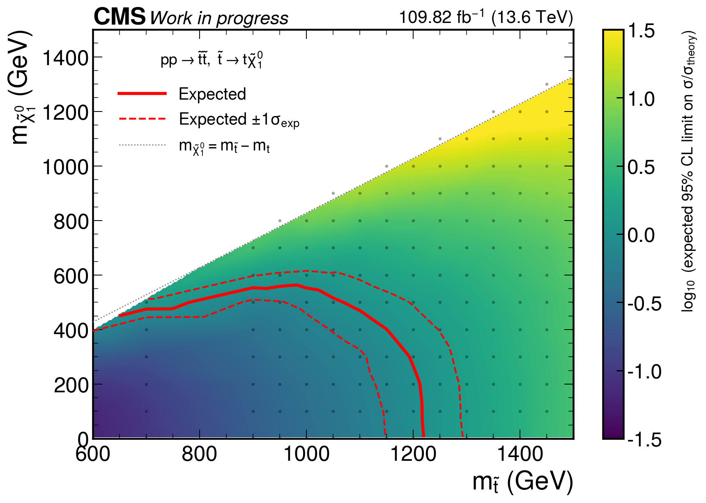
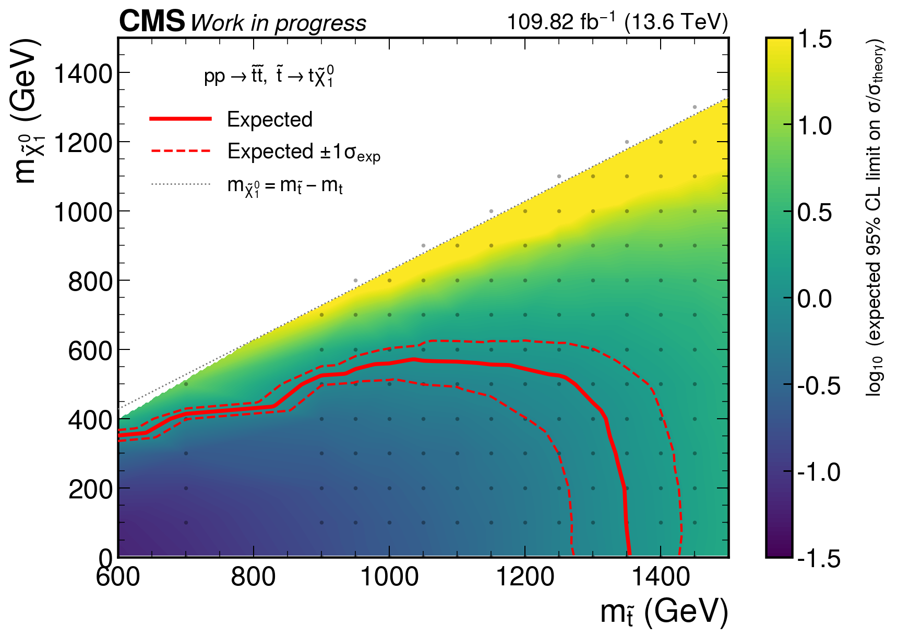

Common mass points: 188. Median SR_Nt1/SR expected-limit ratio: 0.606. Ratio < 1 means SR_Nt1 is stronger. Point counts: SR_Nt1 better 137, SR better 51. Expected-excluded grid points: SR 47, SR_Nt1 63.


limit_comparison.json · summary.md